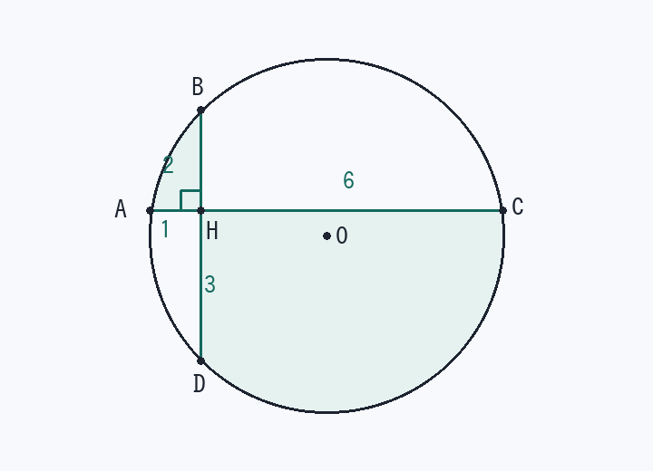

第4回 直交する2弦と網目部分の面積（方べきの定理）
円 O の2つの弦 AC、BD が点 H で直交している。AH = 3、BH = 2、DH = 6 のとき、
(1) 円 O の面積を求めよ。
(2) 網目部分 ABHDCH の面積を求めよ。
(1) 円 O の面積を求めよ。
(2) 網目部分 ABHDCH の面積を求めよ。

解法の型
交わる2弦 → 方べきの定理 AH × HC = BH × HD で足りない長さを出す。
円の面積は r を出さず r² を出す（弦の垂直二等分線は中心を通る → 直交する2弦なら座標が最速）。
曲線でかこまれた面積は「扇形 − 三角形（弓形）」＋「直線図形」に切り分ける。
(1) 円 O の面積
- 方べきの定理で HCAH × HC = BH × HD
3 × HC = 2 × 6 → HC = 4 （よって AC = 3 + 4 = 7） - H を原点にとるA(−3, 0)、C(4, 0)、B(0, 2)、D(0, −6) （AC を x 軸、BD を y 軸）
- 弦の垂直二等分線で中心 O
弦 AC の中点の x 座標 = (−3 + 4) / 2 = 1/2
弦 BD の中点の y 座標 = (2 − 6) / 2 = −2
O(1/2, −2)中心から弦におろした垂線は弦を2等分する、を x 方向・y 方向で1回ずつ使うだけです。
- r² を出すr² = OA² = (1/2 + 3)² + 2² = 49/4 + 4 = 65/4
- 面積円 O = πr² = 65π/4
検算：B(0, 2) でも (1/2)² + (2 + 2)² = 1/4 + 16 = 65/4。A・B・C・D の4点すべてで r² = 65/4 になります。
(2) 網目部分の面積
- 2か所に切り分ける
網目 = (扇形OAB − △OAB + △ABH) + (扇形OCD − △OCD + △CDH)
弓形 = 扇形 − 中心を頂点とする三角形。それに交点 H 側の直角三角形を足します。
- 扇形2つの合計は円の半分
AC ⊥ BD より 弧AB + 弧CD = 半円 → ∠AOB + ∠COD = 180°
扇形OAB + 扇形OCD = πr² / 2 = 65π/8中心角を個別に出す必要はありません。ここが要領です。
- △OAB + △OCD
A − O = (−7/2, 2)、B − O = (−1/2, 4)
△OAB = ½|(−7/2)(4) − (2)(−1/2)| = ½ × 13 = 13/2
C − O = (7/2, 2)、D − O = (−1/2, −4)
△OCD = ½|(7/2)(−4) − (2)(−1/2)| = 13/2
合計 = 13 - △ABH + △CDH（直角三角形）△ABH = ½ × 3 × 2 = 3 △CDH = ½ × 4 × 6 = 12
合計 = 15 - 足し合わせる網目 = 65π/8 − 13 + 15 = 65π/8 + 2
検算：円の面積は約51.1、網目は約27.5。円の半分より少し大きいくらいで、図の見た目と合います（答えは近似せず 65π/8 + 2 のまま書く）。
覚えるべきこと（在庫に入れる1行）
交わる弦は方べき／円の面積は r² だけ出す／曲線の面積は「弓形＝扇形−三角形」に切る
類題（翌日、何も見ずに）
- 同じ図で、△ABH と △CDH の相似比と面積比。
答え
∠AHB = ∠CHD = 90°、AH : BH = 3 : 2、CH : DH = 4 : 6 = 2 : 3 なので相似ではない（∠BAH と ∠DCH は等しくない）。面積比は 3 : 12 = 1 : 4。
- AH = 1、BH = 2、DH = 4 のとき、円の面積。
答え
HC = 8、O(7/2, −1) より r² = (7/2 + 1)² + 1² = 81/4 + 1 = 85/4、面積 85π/4。
← 第3回 正方形2つと七角形の面積 ｜ 第5回 x⁴ 型の因数分解 → ｜ 高校受験数学の一覧に戻る
動画の音声ナレーション
解説の全文を読む
- こんにちは。知多丸の落ちこぼれ救済チャンネルです。難関大学に合格して、錯覚資産を手に入れて、一流企業に入社しよう。今日は円の問題です。円オー の2つの弦 エーシー と ビーディー が、点エイチ で直交しています。エーエイチ が 3、ビーエイチ が 2、ディーエイチ が 6。1番、円オー の面積を求めなさい。2番、網目部分、三角形エービーエイチ 側 と 三角形ディーシーエイチ 側 の面積を求めなさい。
- 型は3つです。1つ目、弦が交わったら、方べきの定理。エーエイチ かける エイチシー イコール ビーエイチ かける エイチディー。2つ目、円の中心は、弦の垂直二等分線上にある。3つ目、面積は、扇形と三角形に切り分ける。この3つで最後まで行けます。
- 手順1。まず、方べきの定理で エイチシー を出します。3 かける エイチシー が、2 かける 6 で 12。ですから、エイチシー は 4。これで弦 エーシー は、3 足す 4 で 7 と決まります。
- 手順2。中心オー の位置を決めます。エイチ を原点、エーシー を よこ軸、ビーディー を たて軸 にとります。中心から弦におろした垂線は、弦を2等分しますから、オー は エーシー の中点の真上か真下、そして ビーディー の中点の横。エーシー の中点は、マイナス3 と 4 の平均で 0.5。ビーディー の中点は、2 と マイナス6 の平均で マイナス2。よって オー は、よこに 0.5、たてに マイナス2 の点です。
- 手順3。半径の2乗を出します。オー から エー までを、三平方の定理で。よこの差は 3.5、たての差は 2。ですから 半径の2乗 は、3.5の2乗 足す 2の2乗、12.25 足す 4 で、16.25。半径そのものは使いません。面積では2乗のまま使うからです。
- 1番の答えです。円の面積は、パイ かける 半径の2乗。ですから、65 かける パイ を 4 で割って、4分の65パイ。数でいうと、およそ 51.1 です。
- 2番です。網目部分は、弦の一部と弧で囲まれた形が2つ。1つずつ、扇形 引く 三角形 足す 三角形、という形に分解します。まず、弧エービー の部分は、扇形オーエービー から 三角形オーエービー を引いた弓形。そこに 三角形エービーエイチ を足す。ディーシー 側も同じです。
- ここが今日のヤマです。2つの扇形の中心角を、足すと 180度 になります。理由は円周角。三角形エービーエイチ で、角エー と 角ビー を足すと 90度。角エー は弧ビーシー の円周角、角ビー は弧エーディー の円周角ですから、弧ビーシー と 弧エーディー を足すと 180度。残りの 弧エービー と 弧シーディー も、足して 180度 です。
- だから、2つの扇形の面積の和は、円の半分。円の面積 4分の65パイ の半分で、8分の65パイ です。中心角を1つずつ求める必要はありません。ここが要領です。
- 次に、三角形オーエービー です。オー を原点に移して、たすきに かけ算して引く形で出します。エー 引く オー は マイナス3.5 と 2、ビー 引く オー は マイナス0.5 と 4。マイナス3.5 かける 4 は マイナス14、2 かける マイナス0.5 は マイナス1。差の絶対値は 13、その半分で 6.5。三角形オーシーディー も、同じ計算で 6.5 になります。合わせて 13 です。
- 残りは、直角をはさむ三角形2つ。三角形エービーエイチ は、2分の1 かける 3 かける 2 で、3。三角形シーディーエイチ は、2分の1 かける 4 かける 6 で、12。足して 15 です。
- まとめます。8分の65パイ から、中心を頂点とする三角形 13 を引いて、直角の三角形 15 を足す。よって、網目部分の面積は、8分の65パイ 足す 2。これが答えです。パイ は そのままにしておきます。
- 検算です。網目部分は、円の内側の一部ですから、円の面積 およそ 51.1 より小さいはず。答えは およそ 27.5 で、だいたい半分と少し。図の見た目と合います。もし引き算と足し算を逆にしていれば、けたが合わなくなるので、すぐ気づけます。
- 在庫に入れる1行です。円の中で弦が直交したら、方べきで長さ、垂直二等分線で中心、そして 直交する弦がつくる向かい合った弧は、足すと半円。この3つを覚えるだけで、この形の入試問題は取れます。チャンネル登録をして、次の動画でも一緒に、要領よく積み上げていきましょう。